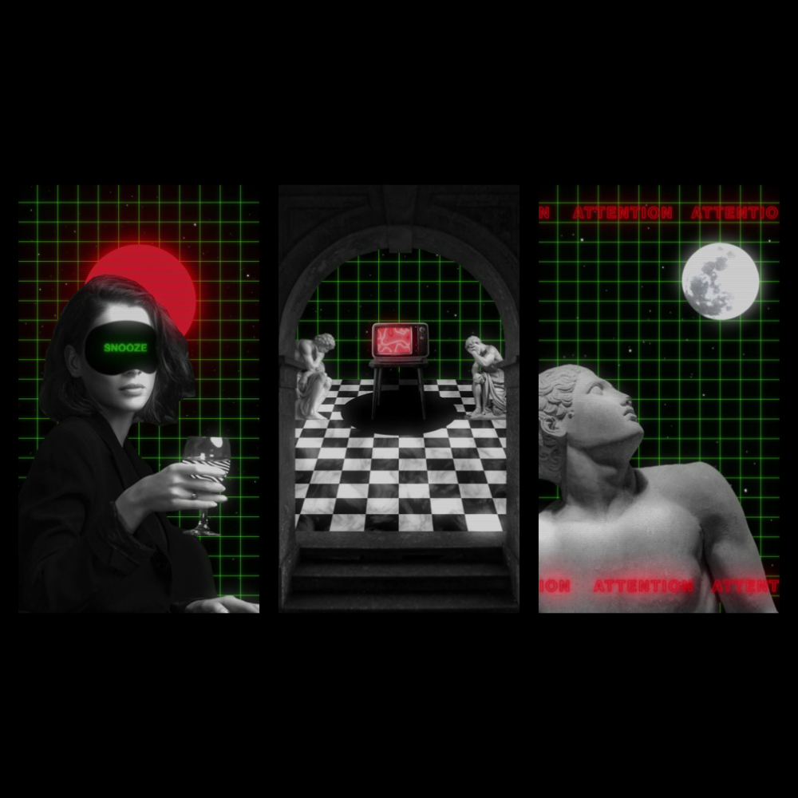

SAD
I participated in Klarens Malluta's course Psychedelic
Animation with Photoshop and After Effects on
Domestika. Klarens' style of vaporwave and remix art combines classic sculpture with animated, liquid-like
textures, iridescent neon colours, geometric grids, and film grain that gives his work a vintage-retro look.
His technique inspired me to create a series of three pieces reflecting seasonal affective disorder. As a big fan of David Lynch, my goal was to emulate the gloomy look and feel of Twin Peaks' black lodge.

Year
2023
Type
Animation
Software
Photoshop
After Effects